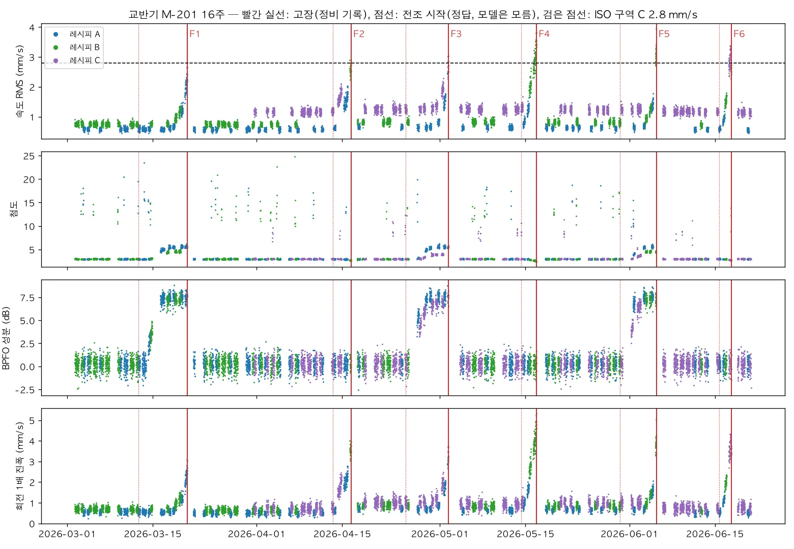

페인트 교반기 M-201(가상)의 16주 데이터를 만듭니다. 진동 센서 하나로 측정하며, 레시피 세 가지(5주차부터 신제품)와 고장 두 종류 6건을 포함합니다. 원료 투입 충격과 정비 뒤 기준 변화라는 함정도 넣습니다. 고장 시각과 종류만 적힌 정비 기록까지 갖춰, 회사 데이터가 오기 전에 같은 형태의 문제를 연습합니다.
무엇을 · 왜#
현장 전문가의 조언은 "실제 설비 데이터는 그만큼 없고 라벨링도 안 되어 있으니, 합성 데이터로 문제를 명확하게 만들어 연습하라"였습니다. 합성 데이터의 좋은 점은 정답(전조가 언제 시작했는지)을 우리가 안다는 것입니다. 정답은 모델에 공개하지 않고 채점과 해설에만 씁니다.
| PBL 문제(회사가 준다고 가정) | 이 장의 합성 데이터 |
|---|---|
| 설비와 센서 | 교반기 M-201, 모터 구동단 베어링 하우징의 가속도계 하나(5,120 Hz, 운전 중 10분마다 1초) |
| 운전 조건 | 레시피 A 수성 저점도(1,200 rpm) · B 유성 중점도(1,500 rpm) · C 고점도 신제품 프라이머(1,750 rpm, 5주차부터) |
| 일정 | 하루 06~22시 2교대, 일요일 휴무, 고장 뒤 24시간 정지 |
| 고장 | 베어링 외륜 손상 3건, 임펠러 안료 부착(불균형) 3건 |
| 라벨 | 정비 기록: 고장 시각·종류·작업 내용만 |
고장과 함정의 물리#
| 무엇 | 진동에서 보이는 것 | 전조 길이 |
|---|---|---|
| 베어링 외륜 손상 | 외륜 결함 주파수(BPFO = 볼 수/2 × 회전 주파수 × (1 − d/D)) 간격의 충격이 약 1.8 kHz 공진을 일으킵니다. 포락선 BPFO 성분과 첨도가 먼저 오르고, 속도 RMS는 마지막에만 오릅니다 | 6~8일 |
| 임펠러 안료 부착(불균형) | 회전 1배 성분이 며칠에 걸쳐 커집니다. 속도 RMS도 함께 오릅니다 | 2~3일 |
| 원료 투입 충격(고장 아님) | 교대의 약 35%에서 시작 무렵 30분~1시간(스냅숏 3~6개), 불규칙한 시각의 충격이 900 Hz 구조 공진을 울려 첨도가 8~25까지 튑니다 | — |
| 정비 뒤 기준 변화(고장 아님) | 부품을 바꾸면 평소 1배 진동이 0.85~1.25배, 배경 잡음이 0.9~1.15배로 달라집니다 | — |
따라 하기#
-
16주 데이터를 만들고 그림을 그립니다(약 6초).
.venv/bin/python textbook/06_mixer_data.py # 8739 스냅숏 · {1: 576, 2: 576, 3: 480, …, 16: 480} -
그림을 봅니다. 빨간 실선은 정비 기록의 고장 시각이고, 점선은 전조 시작 시각(정답)입니다.

교반기 M-201 16주: 속도 RMS · 첨도 · BPFO 성분 · 회전 1배 진폭, 레시피별 색 - 베어링 고장(F1·F3·F5)은 BPFO 성분이 며칠 앞서 오르고 첨도가 뒤따릅니다. 속도 RMS가 ISO 구역 C(2.8 mm/s)를 넘는 것은 고장 몇 시간 전뿐입니다.
- 불균형 고장(F2·F4·F6)은 회전 1배 진폭이 2~3일 동안 커집니다.
- 첨도가 일시적으로 튀는 것은 원료 투입 충격입니다. 첨도만 보는 모델은 이 때문에 헛알람을 냅니다.
- 5주차부터 보라색(레시피 C)이 섞이면서 평소 진동 수준이 올라갑니다.
-
한 주 데이터와 정비 기록을 열어 봅니다.
import pandas as pd, json w = pd.read_parquet("data/sim/inbox/week-03.parquet") print(w[["time", "recipe", "rpm", "vel_rms", "kurtosis", "bpfo_db", "v1x"]].tail(3)) print(json.load(open("data/sim/inbox/week-03-maintenance.json")))정비 기록의 형식은 다음과 같습니다. 전조가 언제 시작했는지는 적혀 있지 않습니다.
[{"id": "F1", "time": "2026-03-20T15:30:00", "week": 3, "kind": "bearing", "kind_ko": "베어링 외륜 손상", "work": "소음·온도 상승으로 정지, 구동단 베어링 교체"}] -
특징 열을 확인합니다. 모든 모델이 같은 특징을 봅니다.
열 뜻 vel_rms10~1,000 Hz 속도 RMS(mm/s) — ISO 10816 기준 acc_rms,peak,kurtosis,crest가속도 세기와 충격성 v1x,v2x회전 1·2배 속도 진폭(mm/s) bpfo_db포락선 스펙트럼의 BPFO 성분(배경 대비 dB) b00~b31로그 간격 32개 대역의 로그 에너지(오토인코더·패턴 검색 입력) recipe,rpm운전 조건(모델 입력이 아니라 맥락)
회사 데이터로 바꿔 끼우기
회사가 진동 원파형을 주면 pdm_agent/features.py의 snapshot_features(x, rpm)로 같은 특징을 만듭니다. 한 주씩 week-NN.parquet와 정비 기록 week-NN-maintenance.json으로 저장하면 5장의 운영 하네스를 그대로 실행할 수 있습니다. 베어링 치수가 다르면 bpfo()의 볼 수·지름을 바꿉니다.
확인 문제#
- 이 데이터에서 ISO 진동 등급 규칙(속도 RMS 2.8 mm/s)만으로 베어링 고장을 일찍 잡기 어려운 이유는 무엇인가요?
정답
베어링 외륜 결함의 충격은 약 1.8 kHz 공진 대역에서 보이는데, ISO 속도 RMS는 10~1,000 Hz만 봅니다. 그래서 속도 RMS는 손상이 아주 커진 마지막 몇 시간에야 오릅니다. 포락선 BPFO 성분은 며칠 앞서 오릅니다.
- 원료 투입 충격을 고장으로 착각하지 않게 하려면 어떤 방법이 있을까요? 두 가지 이상 들어 보세요.
정답
예: (1) 문턱값을 넘는 상태가 더 오래 지속되어야 알람이 울리도록 합니다. 충격은 스냅숏 3~6개(30분~1시간) 동안 이어지므로 기본 규칙 "3번 연속"으로는 모두 걸러지지 않습니다. (2) 충격성(첨도) 대신 주기성이 있는 지표(BPFO 성분)를 봅니다. (3) 교대 시작 직후 구간을 따로 다룹니다. (4) 짧은 이동 중앙값으로 일시적으로 튀는 값을 줄입니다. 5장에서 코딩 에이전트도 "첨도는 원료 투입 때 정상에서도 튀어 뺐다"고 적었습니다.